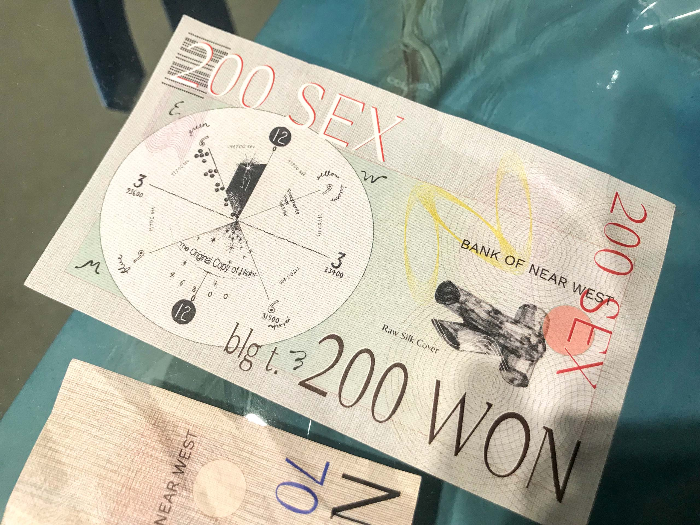
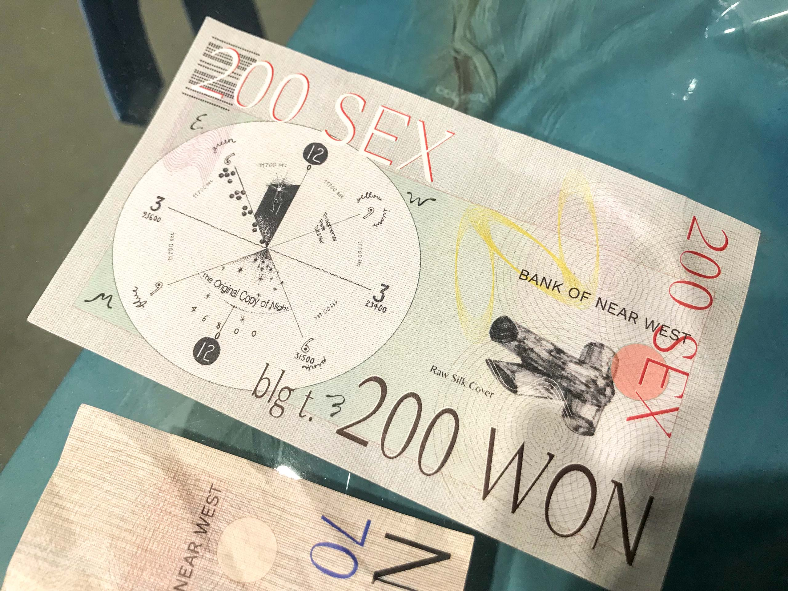
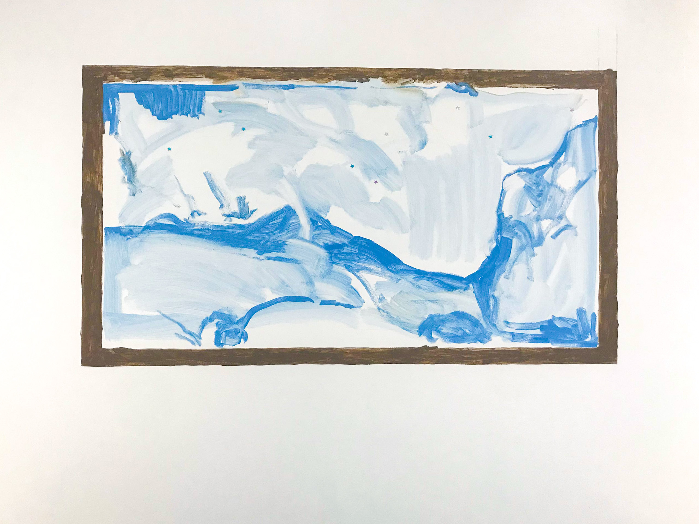

제목으로 뭐가 좋을까?
<
여로님, 안녕하세요.
녹음과 단풍이 푸르던 봄여름가을이 끝났네요. 어느덧 12월도 한창입니다. 무탈히 지내고 계신지 모르겠어요.
지난 가을에 김범 작가의 개인전 《바위가 되는 법》 리뷰를 쓰게 된다면 여로님께 보내드린다는 말을 했었죠.
그간 여러가지 일들을 신경 쓰느라 전시 리뷰를 쓸 몸 상태가 만들어지지 않더라고요. 이런 편지 형식으로는 더더욱요.
그렇게 한 두 달 동안 계속 '보내야되는데, 보낸다고 말해놨는데.. ' 하고 떠오르다가 전시 종료일이 얼마 남지 않았다고 해서 며칠 전에 리움 미술관에 다녀왔습니다.
사실 저는 (서울시립미술관을 제외하고는) 미술관에 대한 좋은 기억이 별로 없어요. 저는 제가 접속할 수 없는 대단함이나 많은 사람들이 모여있는 공간에 갈 때 심리적 장벽을 크게 느끼곤 하거든요.
그런 점에서 미술관은 항상 자기 전시의 의미를 수차례 들이밀고는 하고, 수많은 익명의 사람들이 시간을 보내는 공적 공간이기도 한지라 저로 하여금 '내가 여기에 있어도 되나?' 라는 생각을 적잖게 하게 만들었습니다.
또 마침 오늘이 리움에서 생태와 관한 심포지엄 《생태적 전환: 그러면, 무엇을 알아야 할까》 가 열리는 날이더라고요. 로비 층에 도착하니 깔끔하고 멋드러지게 차려입은 중년의 사람들이 각자의 비즈니스에 대해 이야기하고 있었습니다.
그런 풍경을 통과해서 봤던 전시의 서문과 디지털 도슨트에서는 《바위가 되는 법》을 대략 다음과 같이 소개하더군요.
"한국 대표 동시대 미술 작가 김범의 개인전 《바위가 되는 법》은 우리가 아는 것, 보는 것, 믿는 것에 대한 의심을 촉구하고, 모든 관습적 사고를 몰아내어 새롭고 다르게 '보는 법'을 일깨우는, 현대 사회의 속도전 속 잔잔한 부조리극이다."
여기까지 읽다가 보니, 위 서문이 권장하는 전시의 입구에 대해 제가 일종의 거부감을 느끼고 있다는 생각이 들었습니다.
마치 저는 이동의 자유를 전제로 하여 대부분의 장소로 갈 수 있는 '오픈 월드' 장르의 게임을 하러 왔는데, 막상 접속해보니 안경 쓴 npc가 불쑥 등장해 제 손을 붙잡으며 1시간 30분 분량의 미션을 부여해버린 것 같달까요?
《바위가 되는 법》은 일전에 한 차례 본 적이 있는 전시임에도 불구하고 미술관 길목에서부터 받았던 은은한 스트레스가 훅 묵직해졌습니다.
어떠한 의미나 가치의 뭉치들을 일방향적으로 수신하게 될 때 (혹은 은근히 유도 당할 때) 제가 느끼는 이 무게감이 호들갑처럼 느껴지실지도 모르겠지만, 저는 그렇게 전시의 입구만을 보고 전시장을 걸어나왔습니다.
그렇게 로비 벤치에서 따뜻한 아메리카노와 함께 멍을 때리며.. 힘을 차리다 눈에 들어온 게 박보마 작가가 참여한 공간프로젝트 《물질의 의식》입니다.
《물질의 의식》은 로비 층에 조그맣게 트여있는 휴게 공간인 미디어룸을 전시 공간으로써 활용한 전시인데요.
약속과는 다르지만 위와 같은 사정으로 《물질의 의식》에 대해 먼저 말해보겠습니다.


대리석을 연상시키면서도 오묘한 하늘색을 띠고 있어 희한한 아름다움을 느끼게 하는 기물들이 중심처럼 서있는 공간이었습니다.
넥타이, 액자, 의자, 리본, 담배, 방울, 지폐, 깃털, 악보, 그림자, 조화, 얼음처럼 보이는 여러가지 물건들이 책상이나 재단과 같은 중심 기물 곳곳에 놓여져 있었는데요.
저는 감상 초입에 이 오브제들을 눈으로 산책하다 꽂히는 게 생길 때마다 시선을 멈추고는 했습니다.
이 글에서는 우선 넥타이부터 다시 봐볼게요.
이렇게 사진으로 보니까 정말 누가 봐도 넥타이처럼 보이네요.
사실 저는 저 천이 처음부터 넥타이인 줄은 몰랐지만 공간을 두 바퀴 정도 돌다가 보니까 '저것이 하늘색 천인 동시에 넥타이구나!' 라는 생각이 들어 쳐다보기를 시작했습니다.
넥타이는 특정한 색으로 물들여진 천을 잘 알려져있는 방법으로 묶으면 만들 수 있는 매듭의 한 종류이지요.
그렇게 묶여진 매듭은 주로 서양식 의복인 정장의 목 부위에 둘러지며 ('나 신랑이다~' 혹은 '나 회사원이다~' 와 같은 신호로써 그리고) 증표로써 기능하기도 합니다.
영화나 티비 드라마에서 아들이 첫 출근 할 때 부모가 넥타이를 메주는 장면이 하나의 상투로써 쓰인다거나 만화책 『지영』의 주인공 지영이 정장에 넥타이를 메고 있는 회사원에 대한 페티시를 갖고 있다는 설정을 떠올려봤을 때, 한낮 매듭 지어진 천에 불과한 저 넥타이와 그것의 의미는 대부분의 사람들에게 아주 잘 알려져 있습니다.
그런 넥타이가 테이블 유리 위 머그컵에 걸려 있는 채로 녹아 있듯 놓여 있네요.
제가 방금 넥타이가 '녹아있다' 고 표현했죠. 그렇게 말한 김에 넥타이가 두르고 있는 머그컵 안을 봐보겠습니다.
커피가 있어야 마땅할 듯한 머그컵 안에는 얼음을 닮은 수정 큐브 하나와 원형 반짝이들 그리고 - 다 마시고 남은 커피가 증발하여 만들어진 듯한 찌꺼기 모양의 - 파란 자국이 보입니다.
시간이 지나서야 만들어질 수 있는 액체 자국과, 시간이 지나면 녹아 사라져야 마땅한 얼음을 닮은 수정 큐브, 순간을 축하하고 기념하는 폭죽의 잔여물처럼 보이는 원형 반짝이들이 한 바닥 위에 있네요.
'이 바닥의 시간은 도대체 어떠한 시간인가?' 하며 어리둥절한 눈빛을 짓게 됩니다. 이 이미지를 기억한 채로 머그컵의 옆자리에 있는 지폐 더미로 시선을 이어가 보겠습니다.
 

한 방향으로 죽 그어진 직선들과 원 모양의 곡선들이 마치 위조 방지 무늬처럼 바탕해 있고, 1 SEX 80000000000000WON, 70 SEX 4000WON, 200 SEX 200WON이라고 적혀있는 지폐 더미들이 놓여져 있습니다.
지폐의 주요한 단위는 WON과 SEX인 듯하네요. SEX를 화폐 가치와 연동시키기는 하지만 1 SEX 80조 원, 200 SEX 200원인 것으로 보아 80조 원의 1 SEX와 200원의 200 SEX를 일률적으로 바라보는 것 같지는 않습니다.
같은 단위로 셈한다고 해서 그 실체까지 하나의 고정된 값어치로 보는 것 같지는 않은데 이 말은 WON이란 단위에도 그대로 적용시켜볼 수 있겠네요.
손상되지 않고 안정적이며 수량화 가능한 가치의 척도 중 하나인 화폐 가치에서 '고정불변함' 이라는 속성이 스르르 사라지는 듯한 느낌이 드는데요.
마치 저 멀리로 날아가는 하늘색 나비와 같은 이 미묘한 어긋남은 고개를 들었을 때 볼 수 있는 페인팅에서 느껴지는 감각과 교류합니다.

얼핏 보기에는 하늘색 풍경 그림을 고동색 액자가 감싸고 있는 모습입니다만, 고동색 액자 테두리 역시 같은 물감으로 그려진 그림입니다.
어떠한 기능을 하고 있는 물건이 - 예를 들어 액자가 - 그에 기대되는 질료가 아닌 다른 질료로 이루어져 있을 때 발생하는, 인식의 무효화는 우리가 이 전시에서 다른 사물들을 볼 때 어떤 관점으로 봐야할지 점검을 요구하는 신호이기도 하죠.
마치 '우리 헤어져.' 란 연인의 이별 통보를 들었을 때 자신의 인생 전체에 회의감을 갖게 되는 것처럼..
앞서 언급한 지폐에서는 사라지는 듯한 감각이 느껴졌다면 위 그림에서는 역으로 액자가 없는데 있는 것 같은, 뭐가 생긴 것 같은 느낌이 듭니다.
아래 사진에서 보이는 의자와 시트지의 관계를 보며 이 느낌을 이어가 보고 싶은데요.


《물질의 의식》을 소개하는 전시장 입구의 팻말에는 이 공간이 '자유롭게 휴식을 취할 수 있는 휴게 공간이자 전시 공간'이라고 적혀있어요. 원기둥 모양의 의자로 보이는 두 하얀색 원통과 대리석 시트지와의 관계는 여느 일반적인 가구와 시트지와의 관계와는 다릅니다. 일반적인 시트지라면 자신에게 주어진 기물의 모양에 꼭 맞게 포개어져야 하는 숙명을 갖고 있잖아요. 하지만 이 의자의 시트지는 의자와 포개지지 않은 면을 뻔뻔하게 내보일 뿐만 아니라
예사롭지 않은 구김을 전면에 내세웁니다. 마치 구김 자체도 이 의자와 같은 하나의 존재라는 듯이 그 격한 형태로써 자기 존재를 주장을 하고 있는데요.
이 구김의 단단함을 보고 있자면 시트지가 단순히 구겨져서 저렇게 된 것이 아니라 - 평면인 시트지가 입체인 원통 의자의 모양을 입듯이 - 원통과 원통 사이의 공기 혹은 어떤 공간을 감싸고 있는 듯한 인상을 갖게 됩니다.
의자를 wrapping하는 과정에서 구김이 발생한 것이 아니라 그 wrapping을 통해 구김까지 도달하기 위해 의자를 활용한 것 같더라고요. 바로 옆에서 고요히 재단과 하나가 된 시트지와는 다르게 말입니다.
그랬을 때 우리에게 선명히 보이는 것은 의자나 그 안의 구성품이 아닌 시트지의 구김 그 자체입니다.
: 아직도 내가 의자로 보이니?
앞서 풀이했던 넥타이의 엉성한 성립 조건이나, 머그컵 안에 들어 있는 물질들의 뒤섞인 시간성, 고동색 액자와 하늘색 그림 사이의 모호한 역할 구분의 연장선상에서 '시트지의 구김 그 자체입니다.' 라는 말을 다시 읽어본다면
박보마는 시트지를 의자와 한 군데에 모아 놓고 의자의 모양에 맞춰 반쯤 포개어 뒀지만, 시트지는 결코 의자로 수렴되지 않았습니다.
이렇게 '의자' 라는 사물에 잠입하기는 하지만 그것의 구성 요소가 되는 일로부터는 자진 탈락/탈각하는 방식으로 개별 요소(ex. 시트지)의 물질성을 부각시키는 일을 본 프로젝트의 제목인 '물질의 의식'으로 불러볼 수도 있겠네요.
일전에 리움 미술관 인스타그램에 올라온 박모마의 작가 인터뷰에서 "저는 세계가 존재하지 않는다는 감각에 대해 작업한다" 는 작가의 말을 들은 기억이 떠오르는데요.
이때의 '세계'를 사회의 질서, 화폐의 질서, 기능/사물의 질서로 읽어볼 때, 박보마는 하늘색 시트지나 은색 면 기둥, 넥타이, 리본 같은 물건을 더 큰 기물들에 수렴시키지 않는 방식으로 그 물질의 목소리를 선명하게 만드는 것으로 보입니다.

《물질의 의식》에서 마지막으로 언급하고 싶은 작품은 위 <그림자 셀피 연작>입니다.
본 전시장을 가상 회사의 리셉션 공간처럼 연출했다고 말한 작가의 의도에 걸맞게, 전시장에 들어가서 바로 보이는 쪽의 벽에는 그 가상 회사의 임원진들의 그림자 셀피들이 나열해 있는데요.
저는 마지막 사진에 나오는 것처럼 인물의 머리카락 디테일을 저만큼 생생하게 살려둘 정도로 집요한 사람이 정작 그 인물의 이목구비는 보여주지 않았다는 선택에 대해 말하고 싶습니다.
사람 얼굴을 마치 그림자처럼 익명화한 선택은 그 익명성에 힘 입어 임원진들의 권력을 과시하거나 공고히 하는 것이라기 보단 그 앞의 재단과 테이블 위의 오브제들에 갈 시선을 빼았지 않고 보존해두는 매너로 읽히는데요.
그 반례로 삼성전자의 회장 이재용의 얼굴을 떠올려 볼 수 있겠습니다.
우리가 '삼성' 이라는 회사의 얼굴에 대해 생각할 때 흔히 (고) 이건희 전 회장이나 현 이재용 회장의 얼굴을 떠올리게 되지 않나요?
얼굴이란 건 세상에서 가장 커다란 의미값을 가진 오브제이기도 한데 그 회사 주요 임원진의 얼굴에는 한 회사의 활동 내용 역시 수렴되잖아요. 제품 광고에 쓰이는 연예인의 얼굴이나 서울시 홍보에 쓰이는 두 발로 서 있는 해태가 꼭 그렇죠.
그랬을 때 이렇게 강력한 주목도를 가진 얼굴이라는 이미지를 실사 사진으로 설치했을 경우, 같은 전시 공간에 있던 오브제들의 존재감이 얼마나 죽을지에 대해서는 위 이재용 회장의 존재감으로 미루어 짐작해볼 수 있다고 생각합니다.
음.. 그래도 김범 이야기 하겠다고 했었으니 정말 마지막으로는 김범 작품 하나만 이야기하고 끝내겠습니다.
저는 김범의 이번 개인전 《바위가 되는 법》을 보고서 이 전시가 캔버스 그 자체에 대해 말하고 있다고 생각했거든요?
좀 풀어 말하면 이 시기의 김범이 작가로서 해왔던 말은, 캔버스를 주요 지지체로 기생해왔던 회화라는 장르의 신화를 반복해서 때리는 일이라고 생각했어요. ('때린다'라는 표현을 '해체', '저항', '도전' 이렇게 말해볼 수도 있겠죠.)
여튼 작가가 작품을 통해 주장하는 내용 자체는 똑같은데 그 주장을 반복하는 방식이 개별 작품마다 다르고 지루하지 않으며 그걸 기가 막힌 마감으로 제시하여 설득한다고 느꼈습니다.
예를 들어 위 사진에 보이는 <벽돌 벽>은 여러 직사각형 섬유 면을 실로 엮어 하나의 캔버스로 만든 작품인데요.
저는 이 작품이 보통 회화에서 그러하듯 캔버스 위에 뭘 그려서 - 회화의 재현적 전통을 딛고서 - 그 이미지를 보게 하는 게 아니라 캔버스가 섬유로 이루어진 면이라는 사실을 보게 했다고 생각합니다.
그렇게 함으로써 자신이 캔버스라는 사물을 어떤 언어로 이해하고, 회화라는 매체를 어떤 매너로 대하고 있는지 보여주는 거죠.
이러한 접근을 발견한 이후 전 《바위가 되는 법》에 출품된 모든 회화 작품들이 그 위에 있는 지시문이나 이미지에 몰입하게 하는 데에 목적을 두는 것이 아니라 그것을 통해 회화에 대한 관습적인 믿음 자체에 대해 반박하고 있다고 느꼈습니다.
박보마 역시 사물의 질서를 느슨하게 함으로써 그것들을 이루고 - 그동안 부차적인 것으로 여겨져 온 - 물질 자체에 주목하게 하죠.
"저는 그럼으로써 세계가 잠시 있다고 느낍니다." 라는 작가의 말은 그녀가 예술을 통해 무엇을 주목하게 하고 만들어내려는 사람인지를 급진적으로 보여준다고 생각하는데요.
《물질의 의식》을 컨셉적으로 뒷받치고 있는 가상 회사라는 설정 역시 'Sophie Etulips Xylang Co.,' 이란 거창한 이름을 하고 있지만 이 회사는 '잠시 존재했다가 사라지는 빛과 인상에 불과' 하다는 소개글을 보면 이 설정은 그저 물질이 생생히 날뛸 수 있도록 만들어 놓은 하나의 구실이자 방법론 같아요.
그런 방식들을 통해 자신의 미적 주장을 반복-증식-관철한다는 점에서 김범의 작업세계와의 유비 관계를 이룬다고 말해볼 수도 있겠습니다.
네, 저는 (김범의 전시와) 박보마의 전시를 이렇게 봤는데요.
여로님이 《바위가 되는 법》을 어떻게 봤는지나 김범의 아티스트 북에서 어떤 점을 좋아하는지 듣고 싶다는 생각이 드는 동시에 리뷰를 전시가 끝나고서야 보내게 되어 민망하기도 하네요. ^^;
《물질의 의식》은 제가 알기로 이번 달 24일까지 열리고, 프로젝트 스페이스 사루비아에서 박보마의 개인전 《baby》가 12월 30일까지 열리는데요.
마음과 시간이 나신다면 다음에 같이 보러 가요.
좋은 주중 되시길 바랄게요!
재훈 드림